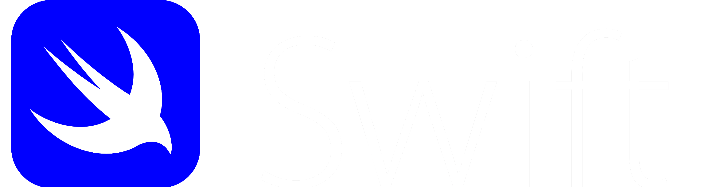

Istorija Swift-a
SWIFT je 1973. godine osnovalo 239 banaka iz 15 zemalja sa ciljem kreiranja zajedničke svetske mreže za obradu podataka i komunikaciju uz pronalaženje zajedničkog jezika za internacionalne finansijske transakcije.


- 1976.- u Belgiji i Holandiji su otvoreni prvi operativni centri
- 1977.- princ Albert poslao prvu poruku, SWIFT postaje od tog trenutka operativan
- 1979.- prvi operativan centar je otvoren u SAD-u
- 1980.- povezane su prve zemlje azijskog kontinenta, Hong Kong i Singapur
- 1985.- instaliran satelitski link koji će povezivati operativne centre SAD i Evrope
- 1987.- SWIFT proširuje bazu svojih korisnika uključivanjem učesnika iz oblasti hartije od vrednosti i tržište novca
- 1991.- SWIFT dobija nagradu instituta Smitsonijan za oblast Informacionih sistema